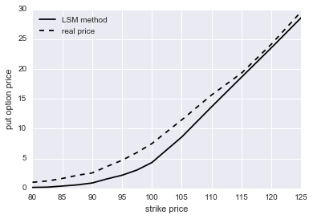
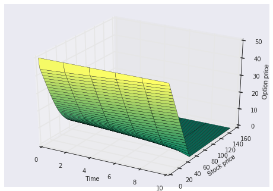

期权定价的几种方法
2016-06-25
这里的公式显示有问题，请移步我在优矿上的帖子：期权定价的几种方法
1.Black-Scholes期权定价公式的推导
保罗萨缪尔森在1965年提出来的股价模型：
其中\(\mu\,\sigma\)是常数,\(B\)是布朗运动。
上述微分方程的解为：
对于欧式看涨期权，最终支付为\(\left(S_{T}-X \right)^{+}\)，所以有：
我们用②的模型：
由于\(B_{T}\)是服从均值为0，方差为T的正态分布，所以考虑用\(\sqrt{T} Z\)代替\(B_{T}\),Z是标准正态分布：
则
则有：
解方程\(S_{0} e x p \left [ \sigma \sqrt{T} a+ \left(r- \frac{ \sigma^{2}}{2} \right) T \right ]-x=0\)
得到：
接下来将⑦分为两部分求解，第二部分：
第一部分：
它等于：
因此：
这时之前求得的a值就有用了：
令 \(-a=d_{2}\) and \(a- \sigma \sqrt{T}=d_{1}\),则有：
以上求解均假设没有分红，交易费用等。
对于欧式期权，BS公式有精确的定价公式，但对于美式期权，BS公式不可能求出解的表达式。
2.二叉树期权定价
二叉树也称为二项式定价模型，二项期权定价模型由考克斯（J.C.Cox）、罗斯（S.A.Ross）、鲁宾斯坦（M.Rubinstein）和夏普（Sharpe）等人提出的一种期权定价模型，主要用于计算美式期权的价值。其优点在于比较直观简单，不需要太多数学知识就可以加以应用。

在很小的一段时间内假设股价会向上运动到\(S_{0}u\),也可能向下运动到\(S_{0}d\)。
为了确定u，d，p，我们假设市场为风险中性，即股票预期收益率等于无风险利率，接着我们构造资产组合：
Portfolio：买\(\Delta\)单位的标的资产，卖出1单位的衍生品（期权）。
上涨情形：资产组合的价值为：
下跌情形：资产组合的价值为：
复制无风险资产，上述两式相等，可以解出：
再根据
求出
将\(\Delta\)代入得到
其中：
根据风险中性的假设，我们有如下方程组(均值和方差)：
再假设u=1/d，那么便可以解出p，u，d：
以下是在matlab中实现的欧式期权二叉树定价，假设没有红利支付。可以用N来调节需要的二叉树的期数。
function [c1,p1]=bt(N)
%s0: stock price
%k: strik price
%sigma: volatility of stock
%r：riskfree rate
%T：expiration date
s0=99.62;
k=100;
sigma=0.4782;
r=0.0185;
T=0.2322;
dt=T/N;
u=exp(sigma*sqrt(dt));
d=1/u;
pu=(exp(r*dt)-d)/(u-d);
pd=(u-exp(r*dt))/(u-d);
c=0;
p=0;
for i =0:N
s=s0*u^i*d^(N-i);
c=c+max((s-k),0)*pu^i*nchoosek(N,i)*pd^(N-i);
p=p+max((k-s),0)*pu^i*nchoosek(N,i)*pd^(N-i);
end
c1=c*exp(-r*T);
p1=p*exp(-r*T);
二叉树和BS公式定价的比较
可以证明，随着期数的增加，二叉树的结果收敛于BS公式的结果。

当然，二叉树也可以为美式期权定价，方法与欧式期权类似，只不过需要算出每个节点的价格，代码就不贴了，有兴趣可以自己实现以下。
3.蒙特卡洛模拟美式看跌期权定价——Regression-Based Methods
蒙特卡洛模拟可以轻松实现路径依赖期权（障碍期权、亚式齐全）的定价。近年来，由Longstaff和Schwartz提出的最小二乘蒙特卡洛(LSM)模拟方法， 该方法已成为目前使用蒙特卡洛模拟美式期权定价的标准方法。LSM有这样一些假定：不支付交易费和税收、无套利机会、不支付红利、无风险利率是常数、标的资产价格演化遵循几何布朗运动。
基本思想： max里第一项是现在执行获得的payoff，第二项是选择等待所能获得的payoff的期望，这个期望用多项式回归的方法获得，即建立当期股价与下期payoff的模型。
import numpy as np
def regressionP(K,M=1000,N=50):
#lam: poisson分布的均值
#S：模拟的股价矩阵
#f：立即执行的payoff矩阵
#M：模拟的路径数量
#N：模拟的期数
r=0.0173
sigma=0.24722
S0=96.10
#K=97.50
T=117.0/360 #单位是年
lam=4
dt=T/N
S=np.zeros((M,N+1))
S[:,0]=S0
f=np.zeros\_like(S)
f[:,0]=0
#这里模拟股价矩阵用到了跳跃扩散过程，也可以试一下其它的
X=np.random.poisson(lam*dt,(M,N))
for i in range(M):
for j in range(1,N+1):
Y=1.1+0.2*np.random.rand(X[i,j-1])
m=Y.prod()
S[i,j]=S[i,j-1]*np.exp((r-0.5*sigma**2)*dt+sigma*dt**0.5*np.random.randn())*m
f[i,j]=max(K-S[i,j],0)
P=0 #期权价格
y=np.zeros((M,N)) #最小二乘拟合的payoff
d=np.zeros((M,1)) #用于计数，之后判断f矩阵中的值是不是每行第一个大于0的
for i in range(1,N):
a=f[:,i+1] #a，b是临时储存向量的变量（想不出什么好名字。。）
b=S[:,i]
W=a[f[:,i]>0]*np.exp(-r*dt)
s=b[f[:,i]>0]
#W是回归模型的因变量
#s是回归模拟的自变量
if s.size==0:
pass
else:
z=np.polyfit(s,W,2) #这里建立的是二次多项式模型，试了下更高次的，结果区别不大
p=np.poly1d(z)
y[:,i]=p(b)
f[:,i]=f[:,i]*((f[:,i]>y[:,i])*1)
d=d+((f[:,i]>0)*1).reshape(M,1)
q=f[:,i].reshape(M,1)
P=P+sum(q[d==1])*np.exp(-r*dt*i)
#这个地方的reshape折腾的死去活来。。
#由于最后一列的f没有在上述循环里面，需要单独写出来
d=d+((f[:,N]>0)*1).reshape(M,1)
q=f[:,N].reshape(M,1)
P=(P+sum(q[d==1])*np.exp(-r*T))/M
return P
import warnings
warnings.filterwarnings("ignore")
p=[]
for i in np.arange(80,100,2.5):
c=regressionP(i)
p.append(c)
for i in np.arange(100,130,5):
c=regressionP(i)
p.append(c)
real=[1.01,1.23,1.65,2.18,2.58,3.67,4.70,6,7.5,11.47,15.65,19.30,24.15,29.60]
l1=np.arange(80,100,2.5)
l2=np.arange(100,130,5)
x=np.concatenate((l1,l2))
import matplotlib.pyplot as plt
import seaborn as sns
%matplotlib inline
plt.figure()
plt.plot(x,p,'k-',label='LSM method')
plt.plot(x,real,'k--',label='real price')
plt.ylabel('put option price')
plt.xlabel('strike price')
plt.legend(loc='best')
plt.show()

这里我选择苹果公司的股票和期权来进行定价。一般来讲，做模拟的话，深度实值或者深度虚值期权定价与实际价格的差距较大，越接近平值越准确。可是上图却好像是相反的，这是怎么回事，我也还没有想清楚，还请大神赐教。
4.有限差分
B-S partial differential equation
先来看一下BS偏微分方程（这个东西很让人头大啊。。）：
之前提过，股票的价格遵循几何布朗运动：
\(\mu\)和\(\sigma\)表示股票价格的预期收益率和波动率。
\(V \left(S , t \right)\)表示某股票期权的价格，我们对它做泰勒展开(直接省略了大于2阶的项)：
将①代入②中，并只保留\(dt\)的一阶项：
用\(\sqrt{T} Z\)代替\(dB\),Z是标准正态分布，还是只保留一阶项：
为了简化上式，用\(Z^{2}\)的期望值代替它，\(E \left(Z^{2} \right)=V a r \left(Z \right)=1\)，进一步得到：
接下来考虑①式和③式离散的形式：
为了消除\(\Delta B\)，我们构建一个包含一单位衍生证券空头和\( \frac{ \partial V}{ \partial S}\)，单位标的证券多头的投资组合，令\(\Pi\)为该组合的价值，则：
在经过\(\Delta t\)时间后，该资产组合的价值变化量为：
将\(Delta S\)和\(\Delta V\)代入⑤式：
⑥式中不含\(\Delta B\)，因此在时间间隔\(\Delta t\)后该组合的价值必定无风险，其在\(\Delta t\)后的瞬时收益率一定等于无风险收益率，所以就有：\( \Delta \Pi =r \Pi \Delta t\)，与⑥式联立整理后得到：
这就是著名的BS偏微分方程，可以应用于价格取决于标的资产价格S的所有衍生证券定价。
用差分估计参数
终于搞定了PDE，现在就是要估计\(\frac{ \partial V}{ \partial t}\)，\(\frac{ \partial V}{ \partial S}\) ，和\(\frac{ \partial^{2} V}{ \partial S^{2}}\)，于是就要用到差分的方法了：

- 对于一阶项：
forward approximation： \( \frac{ \partial V}{ \partial S} \cong \frac{V_{ \imath , j+1}-V_{ \imath , j}}{ \Delta S}\)，\( \frac{ \partial V}{ \partial t} \cong \frac{V_{ \imath +1 , j}-V_{ \imath , j}}{ \Delta t}\)
backward approximation：\( \frac{ \partial V}{ \partial S} \cong \frac{V_{ \imath , j}-V_{ \imath , j-1}}{ \Delta S}\)，\( \frac{ \partial V}{ \partial t} \cong \frac{V_{ \imath , j}-V_{ \imath -1 , j}}{ \Delta t}\)
center approximation： \( \frac{ \partial V}{ \partial S} \cong \frac{V_{ \imath , j+1}-V_{ \imath , j-1}}{2 \Delta S}\)，\( \frac{ \partial V}{ \partial t} \cong \frac{V_{ \imath +1 , j}-V_{ \imath -1 , j}}{2 \Delta t}\)
- 二阶项：
隐性差分
有了以上3个式子，再加上PDE，就可以得到下面的：
可以得到\(a_{j}\)，\(b_{j}\)，\(c_{j}\)的通式(其中\( \frac{S}{ \Delta S}=j\))：

回想上面的网格图，以欧式看跌期权为例，算法如下：
1.初始化一些值，\(f_{ \imath , 0}=K , f_{ \imath , M}=0 , f_{N , j}=m a x \left(K-j \Delta S , 0 \right)\)，还有\(a_{j}\)，\(b_{j}\)，\(c_{j}\)。
2.for i =N:0，解方程组：
3.找到离S0最近的点，输出期权价格。
import numpy as np
from mpl\_toolkits.mplot3d import Axes3D
import seaborn as sns
import matplotlib.pyplot as plt
SMAX=150
dS=1
T=1
dT=0.1
K=50
r=0.1
sigma=0.5
N=T/dT
M=SMAX/dS
f=np.zeros((M+1,N+1))
f[0,:]=K
f[M,:]=0
f[:,N]=[max(K-j*dS,0) for j in range(M+1)]
a=[0.5*dT*(-sigma**2*j**2+r*j) for j in range(M-1)]
b=[1+dT*(sigma**2*j**2+r) for j in range(M-1)]
c=[-0.5*dT*(sigma**2*j**2+r*j) for j in range(M-1)]
x=np.zeros((M-1,M+1))
j=0
for i in range(M-1):
x[i,j]=a[i]
x[i,j+1]=b[i]
x[i,j+2]=c[i]
j+=1
x=x[:,1:M]
for i in np.arange(N,0,-1):
y=f[:,i][1:M]
f[:,i-1][1:M]=np.linalg.solve(x,y)
fig = plt.figure()
ax = fig.gca(projection='3d')
X,Y=np.meshgrid(np.arange(0,11,1),np.arange(0,151,1))
surf = ax.plot\_surface(X,Y,f, cmap='summer', cstride=2, rstride=2)
ax.set\_xlabel("Time")
ax.set\_ylabel("Stock price")
ax.set\_zlabel("Option price")
